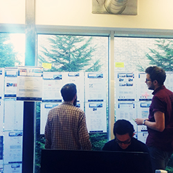
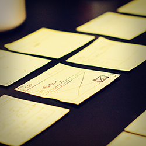
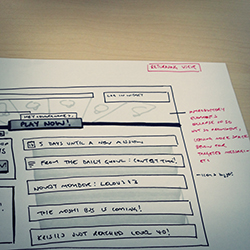

<div class="row intro">
  <div class="col-md-12">
    <div class="jumbotron">
      <h2>Meet me</h2>
      <div class="row">
        <div class="col-md-12">          
          <div class="meet-BRD">
            <div class="row about-yael">
              <div class="col-md-2 about-left">
                <br>
                <div class ="hidden-xs hidden-sm">
                  
                </div>
                <h2><strong>Yaël Levey</strong></h2>
                <p>Design lead</p>
                <div class="about-icons">
                  <a href="http://uk.linkedin.com/in/yaellevey" target="_blank"></a>
                  <a href="http://twitter.com/yaellevey" target="_blank"></a>
                </div>
              </div>
              <div class="col-md-10 about-right">
                <br>
                <p>As a Design Lead, I'm passionate about creating simple, digital experiences that <strong>make people’s lives better</strong>.</p>
                <p>I love listening to how people make sense of their world, understanding what makes them tick, and figuring out how to fuse the world of pixels with this user-centred knowledge.</p>
                <p>I currently work at the BBC as Creative Director of BBC Weather, where I lead a team of UX designers, visual designers, information architects and design researchers to create a world class weather service for millions of people around the world. </p>               
<!--
                <div class="yael-process">                                                 
                  <p><strong>My design process:</strong></p>
                  <ul class="list">
                  <li>Understand the problem</li>
                  <li>Understand the people who have the problem</li>
                  <li>Understand the constraints around the problem</li>
                  <li>Build out how you will know when your solution is successful</li>
                  <li>Work collaboratively with a multi-disciplinary team to come up with lo-fi solutions to the problem</li>
                  <li>Test continuously with users</li>
                  <li>Increase fidelity and depth of solution/s depending on project requirements</li>
                  <li>Help implement solution build by providing appropriate guidance and work collaboratively to make decisions</li>
                  <li>Test solution with users & iterate based on feedback</li>
                  <li>Make sure you can measure performance to see what you've achieved</li>
                  </ul>
                  <div class="process-pics hidden-xs">
	                  
	                  
	                   
                  </div>                 
                </div>
-->
  <!--
              <div class="yael-skills">
                  <p><strong>Skills:</strong></p>
                  <p>Creative Facilitation | Information Architecture | Sketching | Wireframing (Omnigraffle) | Prototyping (Axure, HTML/CSS) | Scenarios | User Flows | User Research | Usability Testing | Usability Reviews | Interaction Design | Copywriting | Workshopping | </p>
                </div>
-->
                <p><strong>Previously:</strong></p>
								<p>I've had over 6 years experience working with some of the most exciting companies, startups and digital agencies in London.</p>
								<p>I've worked with <strong>startups</strong> including <a href="http://justgiving.com" target="_blank">JustGiving</a>, <a href="http://mindcandy.com" target="_blank">Mind Candy</a> and <a href="http://moo.com" target="_blank">Moo</a>, as well as <strong>agencies and businesses</strong> like <a href="http://www.cancerresearchuk.org/" target="_blank">Cancer Research</a>, <a href="http://www.bbc.co.uk/" target="_blank">BBC</a>, <a href="http://www.howsplendid.com/" target="_blank">Splendid</a>, and <a href="http://www.analogfolk.com/" target="_blank">AnalogFolk</a>.</p>     
              </div>         
            </div>
          </div>
        </div>        
    </div>   
  </div>
</div>